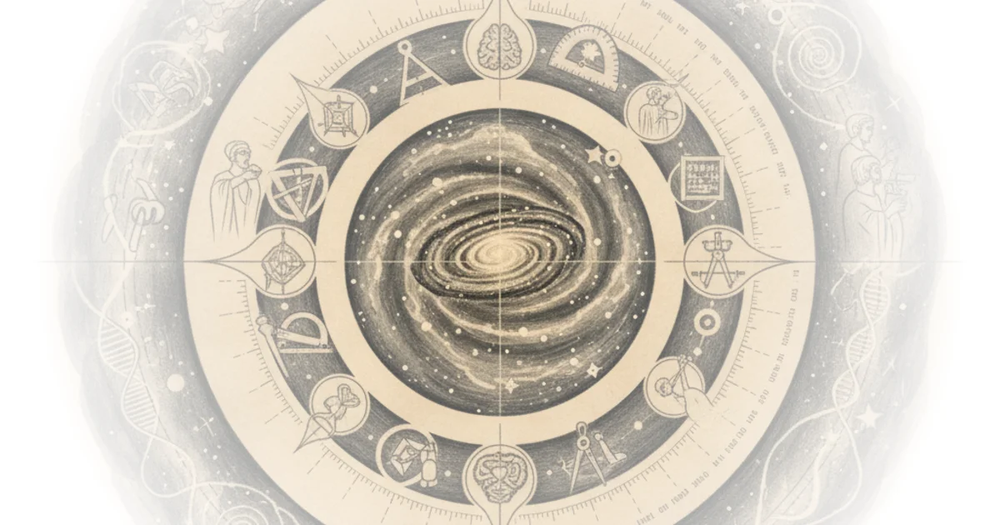

How Astronomers Used Planet Transits and Moon Eclipses to Measure the Cosmos", "excerpt": "A look at how astronomers measured cosmic distances using clever tricks: timing Venus's transit across the Sun, watching Jupiter's moon Io eclipse, and measuring tiny shifts in nearby stars over six months.", Grant Sanderson explains that measuring how far away celestial objects are has always been harder than simply knowing something exists. He argues that the methods astronomers developed to solve this problem are themselves more fascinating than the answers they yielded.
The Transit of Venus
In the 18th century, astronomers knew the shapes of planetary orbits thanks to Kepler, but they lacked any absolute sense of scale. They hungered for measurements—specifically how far certain planets were from Earth at particular moments. A single precise measurement would lock everything else into place.

The key was Venus. When observers in the Northern Hemisphere watched Venus cross between Earth and the Sun—a transit—they saw it appear slightly higher in the sky than someone watching from the Southern Hemisphere, due to their different vantage points on Earth. The difference is tiny: at its closest approach, Venus sits about 39 million kilometers away, over six thousand times Earth's radius. Even when observers stand at opposite ends of the planet, the viewing angles differ by only one arc minute—roughly one-sixtieth of a degree.
The challenge was measurement precision. Clocks weren't accurate enough to simply note the exact moment of observation. But astronomers realized they could time how long Venus took to cross the Sun's disc instead—a duration tied to the planets' orbital speeds and known through Kepler's work. By measuring transit durations from different locations, observers could determine the precise angle between their sightlines, then use simple trigonometry to calculate distance.
One explorer, Gom Le Janil, was tasked with making these measurements during the 1761 transit of Venus. The Seven Years' War delayed him, and he missed it entirely. The next transit wouldn't arrive until 1769—eight years later—and after that, not again for another 105 years. He decided to continue his journey and catch the next one.
By 1769, Le Janil had positioned himself in the Philippines, ready to observe. But on the crucial day, clouds obscured everything. When he finally returned to France, he found himself declared legally dead—his wife had remarried and relatives had divided his estate. The transit of Venus would have to wait.
Measuring Light's Speed
Once astronomers understood distances within the solar system, they could climb a critical rung on the cosmic ladder: measuring the distance to the Sun itself, called the astronomical unit. This became essential because almost everything beyond our solar system is measured in terms of this unit.
But there was another breakthrough. Jupiter's moon Io orbits extremely fast—our Moon takes 28 days; Io completes its cycle in just 42 hours. When astronomers watched Io through a telescope night after night, they noticed something strange: sometimes Io emerged from Jupiter's shadow 20 minutes ahead of schedule, and sometimes it appeared 20 minutes late.
The explanation was elegant. Light itself took time to travel the extra distance when Earth and Jupiter were on opposite sides of the Sun rather than the same side. The delay measured exactly twenty minutes for two astronomical units. This wasn't a perfect measurement—it gave only an approximate value—but it proved that light had a measurable speed at cosmic scales, something unclear from Earth-based experiments where light appeared instantaneous.
Stellar Parallax
With radar now available to measure planetary distances directly, astronomers turned their attention beyond the solar system—specifically to nearby stars. The method mirrors what worked for Venus: parallax.
The two observation points aren't opposite sides of Earth this time; they're opposite sides of Earth's orbit around the Sun. Measure a star at one point in the year, wait six months for Earth to travel to the other side of its orbit, then measure again and compare the angles.
For our nearest neighbor, Proxima Centauri, the effect is staggeringly small. The star sits over four light years away—around 260,000 times the astronomical unit. The change in viewing angle from opposite sides of Earth's orbit amounts to roughly one-and-a-half arc seconds. To visualize: that's equivalent to holding a coin almost three kilometers away and still seeing it as a disc.
The first successful measurement of stellar parallax occurred in 1838 by Friedrich Bessel. It wasn't Proxima Centauri—they couldn't know which star was closest—but over the following century, astronomers catalogued many stars using this method. The technique only works for a tiny portion of the galaxy, though; measuring the full scale of the Milky Way would require entirely new ideas.
Counterpoints
Critics might argue that parallax remains the most precise method for nearby stars despite its limitations, since more modern techniques like spectroscopy have their own challenges with calibration. Additionally, the transit-of-Venus measurements were vulnerable to poor weather and timing—exactly why Le Janil's story ended in such frustration.
The trick wasn't just measuring these distances—it was finding clever ways to measure them when direct observation seemed impossible.
Bottom Line
The historical methods described here represent genuine ingenuity: using planetary transits, orbital timing of moons, and tiny positional shifts over six months to calculate distances. These approaches transformed astronomy before modern technology arrived. The biggest limitation is that parallax only works for relatively nearby stars—most of the galaxy requires different techniques entirely.
What comes next? Astronomers would need completely new methods to map distant parts of our galaxy—and eventually other galaxies—where these clever tricks no longer apply.